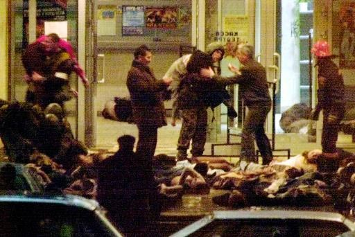

Starting from the Moscow theater hostage crisis in 2002, Russia was faced with increased levels of Islamist terrorism. The FSB, being the main agency responsible for counter-terrorist operations, was in the front line in the fight against terror. During the Moscow theater siege and the Beslan school siege, FSB's Spetsnaz units Alpha Group and Vympel played a key role in the hostage release operations. However, their performance was criticised due to the high number of hostage casualties. In 2006, the FSB scored a major success in its counter-terrorist efforts when it successfully killed Shamil Basayev, the mastermind behind the Beslan tragedy and several other high-profile terrorist acts. According to the FSB, the operation was planned over six months and made possible due to the FSB's increased activities in foreign countries that were supplying arms to the terrorists. Basayev was tracked via the surveillance of this arms trafficking. Basayev and other militants were preparing to carry out a terrorist attack in Ingushetia when FSB agents destroyed their convoy; 12 militants were killed. During the last years of the Vladimir Putin's second presidency (2006–2008), terrorist attacks in Russia dwindled, falling from 257 in 2005 to 48 in 2007. Military analyst Vitaly Shlykov praised the effectiveness of Russia's security agencies, saying that the experience learned in Chechnya and Dagestan had been key to the success. In 2008, the American Carnegie Endowment's Foreign Policy magazine named Russia as "the worst place to be a terrorist" and highlighted especially Russia's willingness to prioritize national security over civil rights.By 2010, Russian forces, led by the FSB, had managed to eliminate out the top leadership of the Chechen insurgency.
